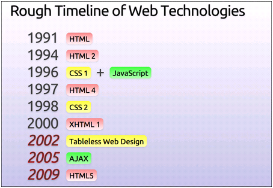

-
Simple 3D (base on canvas)
--by horizon -
Timeline
- 1996年 javascript的介入
- 2005年 ajax技术发展
- 2009年 html5相关技术的兴起
-
曾经：闲的蛋疼的人才在 web 上做3D
而今：如果你不想闲的蛋疼，那就在web上玩玩3D吧- 3D 引擎：
- 不仅仅是特效：
- google实验性产品3d书架 http://workshop.chromeexperiments.com/bookcase
- ?3维全景地图...
- ...
-
绘制3D effects 的两种方式（base on canvas）
- getContext('2d') --> 借助数学算法来模拟
- getContext('experimental-webgl') --> webGL
- 建模工具
-
原理

-
三维旋转矩阵

生成旋转矩阵的一种简单方式是把它作为三个基本旋转的序列复合。关于右手笛卡尔坐标系的 x-, y- 和 z-轴的旋转分别叫做 roll, pitch 和 yaw 旋转。因为这些旋转被表达为关于一个轴的旋转，它们的生成元很容易表达。
-
- 绕 x-轴的主动旋转定义为:
 这里的 θx 是 roll 角。
这里的 θx 是 roll 角。
- 绕 y-轴的主动旋转定义为:
 这里的 θy 是 pitch 角。
这里的 θy 是 pitch 角。
- 绕 z-轴的主动旋转定义为:
 这里的 θz 是 yaw 角。
这里的 θz 是 yaw 角。
-

绕Y轴旋转 -
function rotateY(ball, angleY) { var cosy = Math.cos(angleY), siny = Math.sin(angleY), x1 = ball.xpos * cosy - ball.zpos * siny, z1 = ball.zpos * cosy + ball.xpos * siny; ball.xpos = x1; ball.zpos = z1; } function rotateX(ball, angleX) { var cosx = Math.cos(angleX), sinx = Math.sin(angleX), y1 = ball.ypos * cosx - ball.zpos * sinx, z1 = ball.zpos * cosx + ball.ypos * sinx; ball.ypos = y1; ball.zpos = z1; }
同时绕XY轴旋转 -
关于单点透视的消失点（VanishPoint）和观察点（ViewPoint/Camera）
VanishPoint通常是被观察物体的相对坐标原点
ViewPoint 即观察者的视角点（camera）
VanishPoint demo ViewPoint demo* 关于lighting（光照）放到webGL里面讲
-
关于三角形翻转正反面的判断
http://www.jurjans.lv/flash/shape.html

-
About webGL
- 基于openGL ES 在canvas上渲染图形
- OpenGL® ES Shading Languag
- <script type="x-shader/x-fragment"> -- 片元着色器
- <script type="x-shader/x-vertex"> -- 顶点着色器
- gl = canvas.getContext('experimental-webgl') -- gl的api列表
- webGL 渲染管线流程图及GLES常用点
-
Code View -- Square
- webgl square
- shader language
- initGL()
- initShaders() [getShaders, compileShader, createProgram, attachShaders, linkProgram, useProgram ...]
- initBuffer()
- render()
- webgl square
-
Code View -- Colored Square
- webgl colored square
- shader --> attribute vec4 aVertexColor
- shaderProgram.vertexColorAttribute = gl.getAttribLocation(shaderProgram, 'aVertexColor');
gl.enableVertexAttribArray(shaderProgram.vertexColorAttribute); - // rgba,每4个元素确定一个点的rgba值
// 由于openGL 矩阵是左乘变换，（由右向左）。所以以下颜色分别为 [右上，左上，右下，左下] - gl.bindBuffer(gl.ARRAY_BUFFER, squareColorBuffer);
gl.vertexAttribPointer(shaderProgram.vertexColorAttribute, squareColorBuffer.itemSize, gl.FLOAT, false, 0, 0);
- webgl colored square
-
Code View -- Animate
- webgl animating square
- 由于rotate,translate等变换共用一个模型视图矩阵mvMatrix,通常永远以最开始的状态作为基准点来变换。即不同变换之间不会相互影响
- 每次变换前都copy备份一下mvMatrix矩阵，变换后还原
- 小tip: requestAnimationFrame 有什么好处？
- 小tip: 怎么保证变换速度的一致？
- webgl animating square
-
Code View -- Cube
- webgl animating cube
- 常用方法：
- 分别绘制独立的六个面
- 以三角形为基元绘制，拼接而成
- 每次变换前都copy备份一下mvMatrix矩阵，变换后还原
- 关于drawArrays 和 drawElements
- 关于buffer缓冲区的运用
- 常用方法：
- webgl animating cube
-
Code View -- Texture
- webgl animating cube with texture
- 在shader里面添加 texture
- 用texture的像素点来代替普通color为vertex着色
- 在未经过clip操作前对图片size有要求，如256*256
- webgl animating cube with texture
-
Code View -- Texture Filter
- webgl texture filter
- Nearest（最近点采样过滤）
- 这种算法实际上只是简单地放大了原始图像的像素，并没有做其他任何优化。
- 当纹理被按比例放大或者缩小时，WebGL会在原始图像上寻找最近的点来决定指定点的颜色。在没有缩放的情况下，纹理看其来还是不错的；缩小后，图像看起来还过得去；但是纹理图像被放大时，看起来会有很多“马赛克”
- 优点：效率高
- Linear（线性过滤）
- 对原始纹理图像上的像素进行了线性插值
- 一个白的和一个黑的像素之间的像素会被输出为灰色。这样的话，我们看到的画面效果就更加平滑，但是必然原本锐利的边缘部分会看起来有点模糊。
- Mipmaps（多级渐进纹理过滤）
- 缩小的时候可能出现像素点叠加的情况。。。
- Mipmaps过滤通过为纹理图像生成许多被称为mip level的子图像。这些图像分别是原图尺寸大小、四分之一大小、十六分之一大小……直到1×1像素大小。所有这些子图像的集合被称为mipmap。每一个mip level都是上一级大一点的mip level的平均值，效果好，开销大
- 综合起来，放大可以用linear,缩小用mipmaps
- Nearest（最近点采样过滤）
- webgl texture filter
-
Code View -- Lighting
- webgl lighting
- 逐顶点光照（per-vertex lighting）
- 由于立体平面绘制都是绘制顶点。其他片元都由线性插值完成，所以光照也只需处理顶点。其他交给线性插值
- 环境光
- 平行光源
- 点光源
- 冯氏反射模型
- detail ...
- 逐片元光照（per-fragment lighting） 单独为每个片元（像素）计算光照
- 逐顶点光照（per-vertex lighting）
- webgl lighting
-
About Sandy
- https://github.com/hongru/Sandy
- simple and easy
- base on gl-matrix
- 轻量级
- 大部分常用功能。(基础几何模型，纹理，光照，json建模...)
- 3D素材
- Sandy Cube Sandy Particles Sandy Room
-
Thanks!